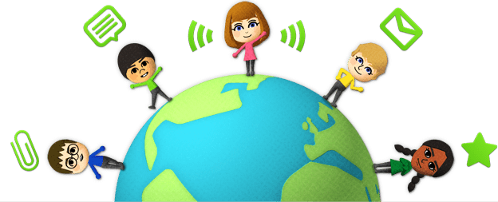
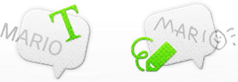
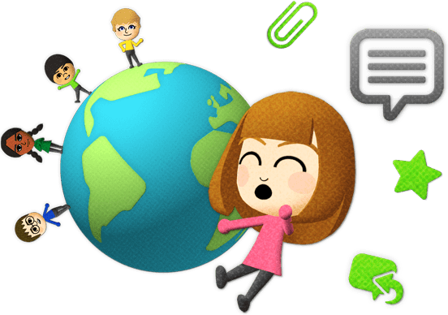
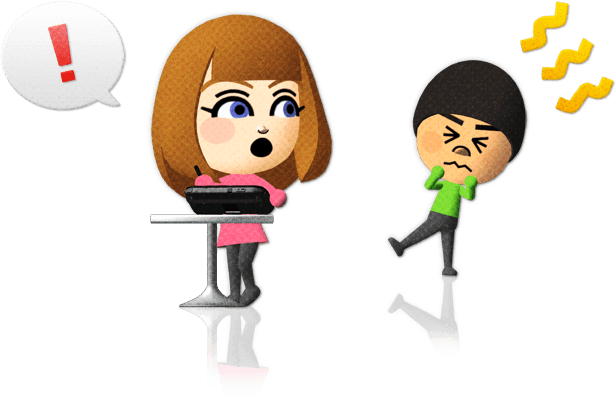
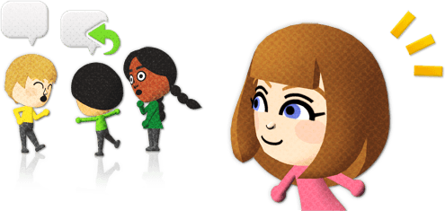
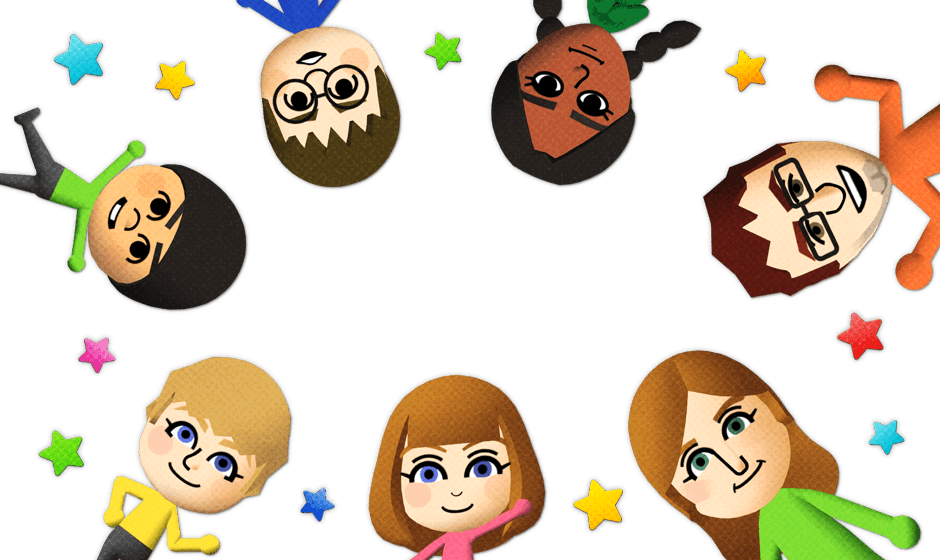

WUT-Miiverse is a community project that connects people through their Mii characters. Share your gaming experiences and discover what other players are talking about.

WUT turns every game into a place where Mii characters can meet, react and share what is happening right now.

Three simple ideas keep the conversation fun for everyone.

Posts may be seen by players from around the world.

Behind every Mii is another person playing a game.
Do not share personal information in public communities.
Select Accept to enter the WUT preview.
HOW SHOULD WUT INTRODUCE YOU?
Pick the badge that feels closest to you. This only changes how your player card is presented.
Choose one option before continuing.
WHEN A GAME STARTS, THE PLAZA WAKES UP.
WUT gathers players, posts and reactions around the games you play, then turns them into one living place.


Select Start to enter.